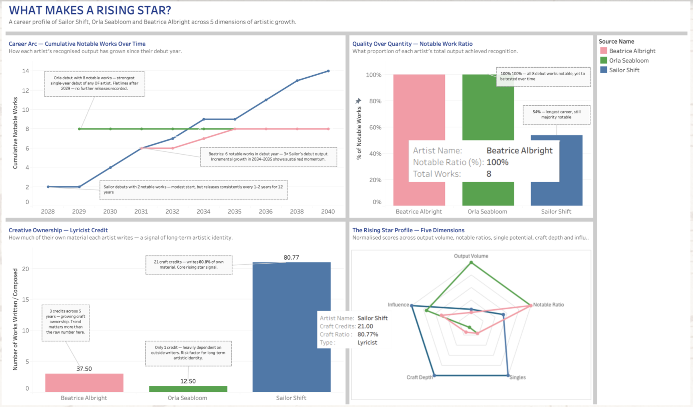
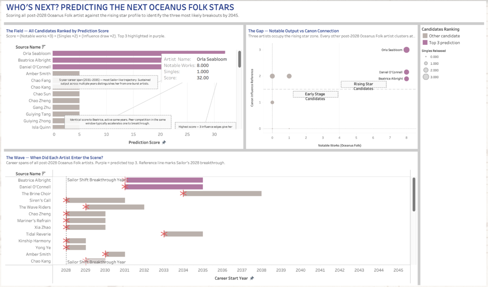
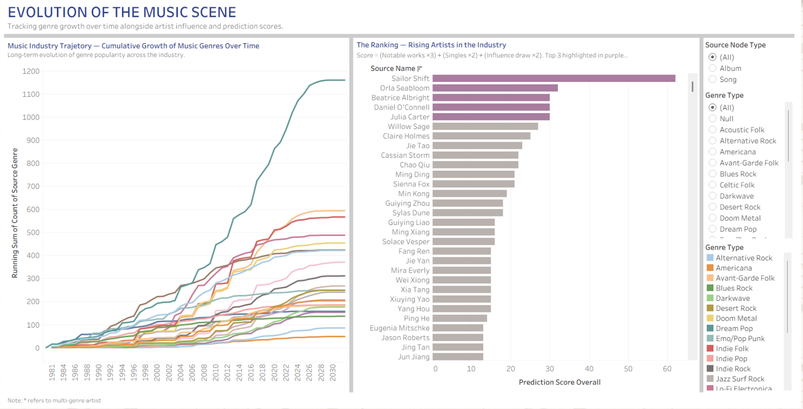

Question 3 Analysis
What Makes a Rising Star in the Music Industry?

Career Arc Line Graph
How has each artist’s recognised output grown over time?
Sailor Shift, the benchmark rising star, career trajectory shows a steady upward climb from 2 notable works in 2028 to 14 by 2040, releasing consistently every 1-2 years with no gaps longer than 2 years. This sustained momentum across 12 years is what defines a true rising star versus a one-album wonder. Orla Seabloom’s career trajectory reveals an opposite pattern, an explosive debut of 8 notable works in 2029 and a complete flatline reveals the risk of a breakthrough-and-disappear pattern. Beatrice Albright sits between these two with a strong debut of 6 notable works in 2031, incremental growth in 2034-2035, then silence. Her trajectory most closely mirrors Sailor’s early years. The key insight is that the shape of the line matters more than where it ends. A gradual upward slope signals a sustainable career, while a spike followed by a flat line signals an artist who has not yet proven longevity.
Notable Ratio Horizontal Bar Chart
What proportion of each artist’s total output achieved recognition?
Orla and Beatrice both score 100% notable ratio which suggest that every work they released achieved recognition. However, this should be interpreted with caution. Orla’s 100% comes from 8 works released in a single debut year with no further releases recorded, which suggest that her notable ratio has never been stress-tested over time before. Beatrice similarly achieves 100% across a small concentrated output window before activity slows. A perfect ratio on a small short burst of releases is easier to maintain than sustaining notability across a long active career. Sailor scores 53.8% where over half her works are notable across 26 releases spanning 12 years of consistent output which is a far stronger signal of sustained career growth compared to the other 2 artists.
Craft Depth
Does each artist write their own material and what type?
Craft depth is the dimension where Sailor most clearly separates from the other two. Sailor Shift has 21 craft credits which means that she writes 80.8% of her own recorded material, spanning both composition and lyrics. This creative ownership is a key differentiator between artists who control their own songwriting and those who perform materials written by others. Orla’s 12.5% ratio (1 craft credit) is the weakest dimension in her profile, this means that she does not write her own material and is heavily dependent on collaborators to define their music. Beatrice’s 37.5% (3 craft credit) shows she is investing in creative ownership.
Radar Chart
How does each artist score across all 5 rising star dimensions?
The radar chart synthesises all five dimensions into a single visual. Sailor Shift’s polygon is the most balanced with strong scores across singles (100), craft (100), and influence (100), with moderate score across output volume (25) and notable ratio (54), confirming her position as the benchmark rising star who combines viral breakout potential, creative ownership, and broad industry connectivity. Orla Seabloom leads on output volume and notable ratio, demonstrating exceptional debut quality, but her lower craft ratio and network influence score suggest she is still building her path towards a sustained career. Beatrice Albright presents the most balanced emerging profile with strong notable ratio, growing craft ownership, and moderate network influence, making her trajectory most comparable to Sailor’s early career arc. While Orla’s dimension scores are strong, Beatrice demonstrates a more balanced performance across all five dimensions, more closely aligning with Sailor Shift, the benchmark rising star profile.
Explanation on the 5 dimensions:
Output volume measures the number of years an artist has been actively releasing work. It serves as an indicator of sustained participation in their career, helping distinguish artists with ongoing commitment from those with only brief or one-time activity.
Notable ratio measures the proportion of an artist’s releases that achieve recognition. It reflects how consistently their work gains attention.
Singles ratio measures the proportion of an artist’s total works that were released as singles. It reflects how frequently an artist strategically selects and promotes tracks as standalone releases relative to their overall output.
Craft depth measures the extent of an artist’s involvement in the creation of their work, including roles such as composing, writing, and producing. It reflects the degree to which an artist shapes their own creative output.
Influence draw measures how much an artist’s work references or builds upon existing works within the OF space. It captures the extent to which an artist is connected to and engages with the broader creative tradition.
Together, the five dimensions provide a holistic view of an artist’s trajectory by capturing consistency of output, impact of releases, public breakthrough potential, creative ownership, and connection to the genre’s tradition. Combined, they move beyond any single metric to identify artists who are not only performing well now, but are structurally positioned to grow into sustained rising stars.
Overall Dashboard Analysis
Across all four charts, a consistent profile of a rising star emerges: sustained output over multiple years (not a single burst), a high proportion of recognised works, creative ownership through self-writing, and deliberate roots in the genre canon. Sailor Shift scores highest on craft depth, singles output, and influence draw, the three dimensions which are most associated with long-term career sustainability. Orla Seabloom scores highest on raw quality metrics but has yet to demonstrate the sustained output that would confirm her as a rising star rather than a debut phenomenon. Beatrice Albright’s trajectory most closely mirrors Sailor’s early career shape, making her the most analytically credible comparison subject.
Who are the Next Oceanus Folk Rising Stars?

Prediction Score Bar Chart
Who scores highest across all post-2028 Oceanus Folk artists?
The prediction score bar reveals a drastic gap between the top 3 and the rest of the field. Orla Seabloom leads with 32, Beatrice Albright and Daniel O’Connell follow at 30, and every other post-2028 Oceanus Folk artist scores 5 or less. The top 3 are categorically separated from the field by a factor of 6.
Why these three dimensions were chosen?
The formula uses Notable Works, Singles, and Influence Draw and excludes Output Volume and Craft Ratio. Here is the reasoning for each decision:
Notable Works × 3 (highest weight) Notable works represent songs that have already gained recognition, making them the strongest signal of real audience impact. A higher weight is given because consistently producing recognised work shows that an artist can repeatedly connect with listeners, which is a key trait of a rising star.
Singles Ratio × 2 (medium weight) Singles ratio measures the proportion of an artist’s work that is released as singles, reflecting how often they make deliberate attempts to create breakout moments. It is weighted moderately because consistently pursuing these opportunities is important, but actual success is already captured under notable works.
Influence Draw × 2 (medium weight) Influence draw measures how much an artist’s work is connected to the existing genre through references and stylistic elements. It is given a moderate weight because being rooted in the genre helps build credibility and identity, but it is not the main factor driving broader success.
Why Output Volume and Craft Ratio were excluded?
Output volume reflects how consistently an artist releases work over time, indicating overall career activity. It is excluded from prediction scoring because it signals potential rather than actual success, and high output alone does not mean an artist is gaining recognition or momentum. Craft ratio reflects the level of creative ownership based on how much of an artist’s work they have written. It is excluded from prediction scoring because it measures creative process rather than audience impact, and strong ownership does not necessarily translate into breakthrough or visibility.
Rising Star Scatter Plot
Do the top 3 stand apart from all other candidates on the two most important dimensions?
The scatter plot shows that the top three predicted artists are clearly separated from the rest. All other post-2028 Oceanus Folk artists cluster in the bottom-left quadrant, with low notable output and no strong connection to the genre, while the three predicted stars stand alone in the top-right as clear rising star profiles.The dot size adds another layer of distinction where the predicted stars all have at least one single release, shown as larger dots, whereas the rest appear as smaller dots with no singles. This clear separation across notable output, genre connection, and singles activity strengthens the reliability of the prediction.
Gantt Chart
Does breakthrough year relative to Sailor’s breakthrough matter?
The Gantt chart reveals that timing of entry is a meaningful differentiator. Beatrice Albright and Daniel O’Connell both entered the scene right at Sailor’s 2028 breakthrough year, positioning them to ride the wave of global attention that Sailor, their longer career bars extending toward 2035 confirm they are still in the music scene and did not just release one music and left. Most other candidates entered before 2028 but show short career spans, suggesting they emerged too early to benefit from Sailor’s influence and failed to maintain activity long enough to break through.
Overall Dashboard Analysis
Dashboard 2 applies the rising star benchmark established in Dashboard 1 to all post-2028 Oceanus Folk artists in order to generate a data-driven prediction of who is most likely to break out next. The three charts function together where the ranking bar chart identifies the highest-scoring artists, the scatter plot confirms that the top three are clearly separated from the rest on the most important dimensions, and the Gantt chart shows that their career timing aligns with the opportunity window created by Sailor’s breakthrough.
Orla Seabloom, Beatrice Albright, and Daniel O’Connell consistently perform well across all views, occupy the rising star zone, and enter the scene at the right moment to benefit from Sailor’s growing global influence. All other candidates fail to satisfy at least one of the key dimensions, making the separation between the top three and the rest consistent across all three analytical lenses.
Overall in the Music industry

Music Industry Trajectory Line Chart
Which genres have grown and which have stagnated?
The line chart spanning 1981 to 2032 shows one genre pulling dramatically away from the rest which is represented by the teal line (Dream Pop). It surges past 1,100 by 2032, accelerating sharply after 2016 while all other genres grow at a far more gradual pace. Most genres cluster between 100 and 600, showing steady but unremarkable growth. A handful of genres remain flat near the bottom throughout the entire period, never gaining significant industry traction. The chart makes clear that genre growth is not linear or uniform, breakout moments exist where a genre suddenly accelerates, often coinciding with a breakthrough artist driving mainstream attention toward it. Oceanus Folk’s own trajectory, while not the dominant line, shows a visible uptick correlating with Sailor’s 2028 breakthrough.
The Ranking Bar Chart
Where does every artist stand?
Sailor Shift’s bar stands alone at over 60, creating a visible gap between her and every other artist in the industry. The next tier, Orla Seabloom, Beatrice Albright, Daniel O’Connell, and Julia Carter, clusters between 28 and 32, highlighted in purple as the top predicted breakouts. Below them, the remaining artists form a long grey tail scoring under 25, confirming that genuine breakout potential is rare and concentrated in a small group. The chart also confirms that Sailor’s score is not just the highest but it is categorically in a different tier, validating her status as the benchmark ceiling against which all rising artists are measured.
Overall Dashboard Analysis
Dashboard 3 expands the analysis beyond Oceanus Folk expanding into a broader industry context. It shows that genre growth is often driven by breakthrough moments rather than gradual accumulation, with rapid shifts triggered by standout artists. It also demonstrates that Sailor Shift’s impact extends beyond her own genre, positioning her as an industry-wide driver of attention and growth.
The combination of the genre trajectory chart and the ranking chart shows that Sailor Shift did not only rise within Oceanus Folk, but also contributed to elevating the genre’s overall visibility. This broader context helps identify the next wave of artists most likely to follow a similar path, based on their scores, genre alignment, and timing of entry into the scene.